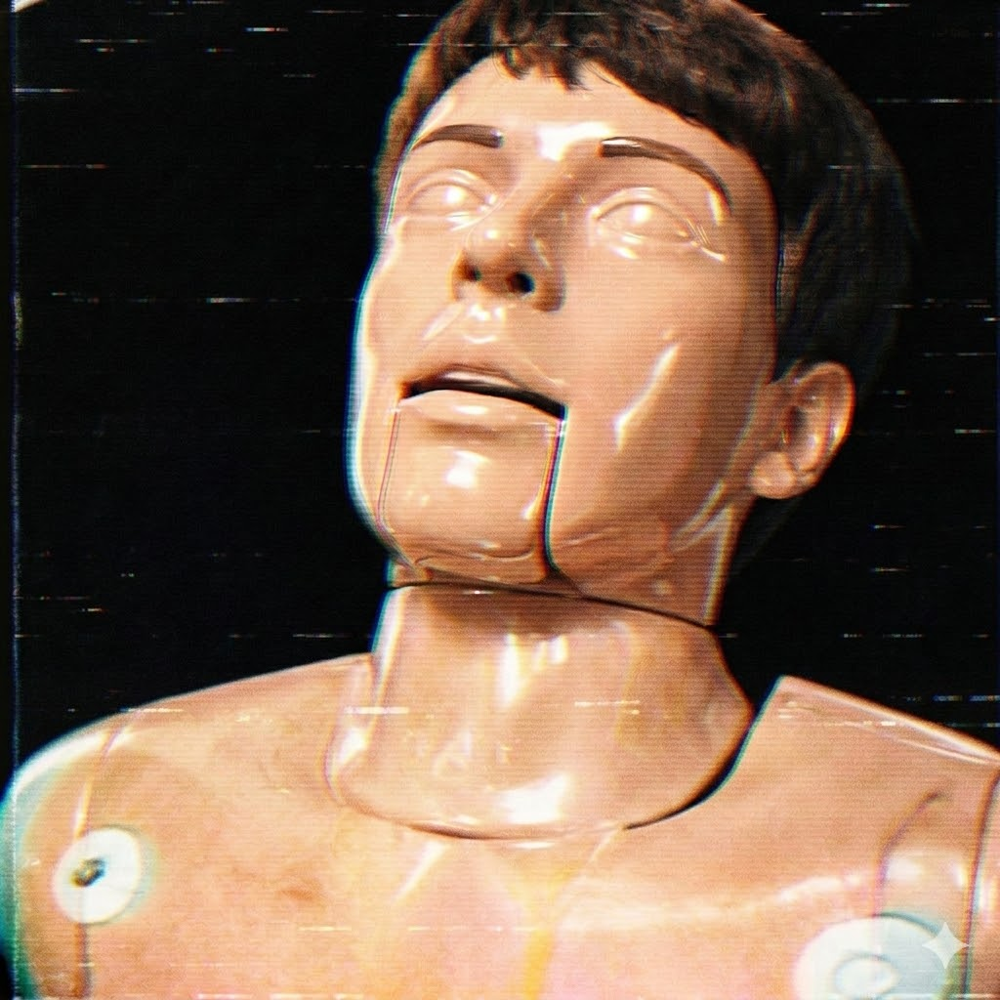
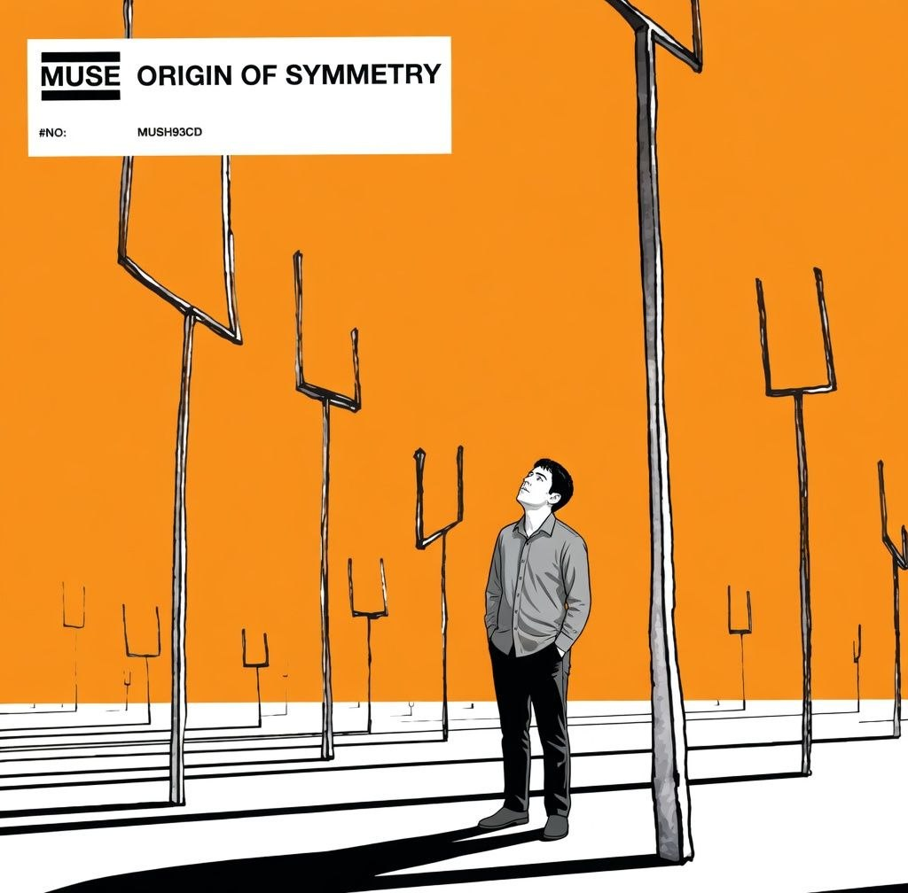

Writer & Storyteller
I write at the intersection of memory and invention — stories that live in the dark corners of ordinary rooms, in the silence between spoken sentences. My work has been called "quietly devastating" and I consider that the highest of compliments.

Born in a city that no longer exists in the way I remember it, I came to writing through the back door — through music, through loss, through a stubborn refusal to let certain moments dissolve into the ordinary fog of forgetting.
I studied literature at the University of Edinburgh and spent three years translating obscure 19th-century correspondence before realising that what I truly wanted was to generate new silences, not excavate old ones.
My short fiction has appeared in Granta, The Paris Review, and various anthologies. When I am not writing, I am walking slowly through places where something important once happened.
Ambience & Atmosphere
The sounds that shape the sentences.
01 / 03
For late-night drafting sessions
Dispatches from the interior. Updated whenever a new one escapes.
Gathering stories…